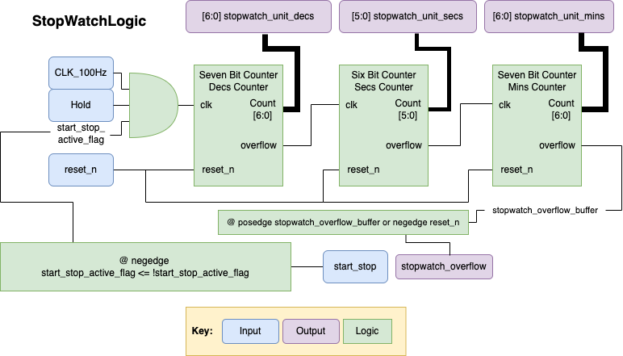
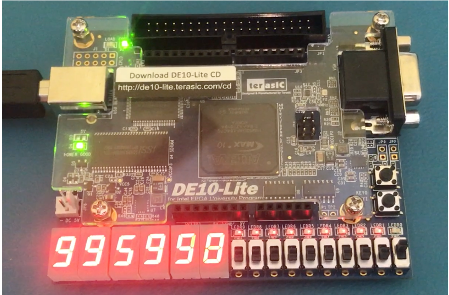

Verilog Stop Watch Project
|
Name: |
Language/Tools Used: |
Timeframe |
|
Stop Watch |
Verilog DE10-Lite |
March 2021 - May 2021 (~6 Weeks) |
This Project was used as a final assesment for a second year module. The aim was to create a fully functional stopwatch using sequential logic using Verilog.
The stopwatch was made up of modules linked as the following diagram shows:
The stop watch was made up of a series of Seven bit counters with some logic surround it to create the start/stop button functionality, along with a hold button (pauses the stop watch whilst held down) and a reset button that resets the stopwatch counter value to 0.
I extensively tested the stopwatch within both simulation and on the DE10 hardware. My stopwatch fufilled all of the criteria in simulation but in the hardware I couldn't get the stopwatch overflow to function correctly. As you can see in the below two images when the stopwatch reaches 99:59:99 the next nubmer it displays should be 00:00:00. But I had 08:00:08. Due to running out of time I was unable to fix this problem during the assessment but if I had an extra two weeks for example to work on the project I believe I could have fixed this.
|  |  |
| Stopwatch just before Overflow Occurs |
Stopwatch Just after Overflow Occurs |
Overall this project allowed me to explore Verilog and dramatically improve it.